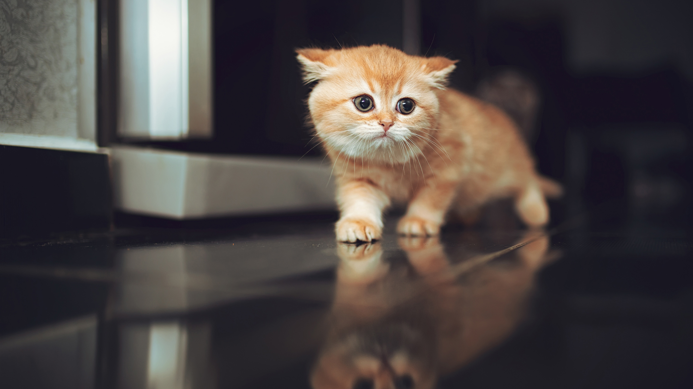

E X P L O R E

Taking care of Kittens

Taking Care of Kittens can be simple when the Mother Cat is able to and does her job well, but that is not always the case. Also, even when Mom tries her best, there are things that you, as the human Mom, need to monitor to keep all safe and healthy.